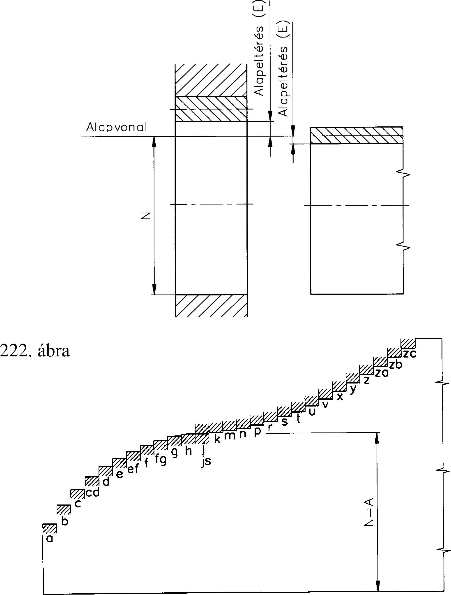

11. Illesztések A laza illesztés olyan illesztés, amelyben az alkatrészek csak játékkal illeszkedhetnek. Az ármeneti illesztés esetén az alkatrészek akár játékkal, akár fedéssel illeszkedhetnek, de a tényleges méretek szóródása, ill. a kapcsolódó két alkatrész véletlenszerű kiválasztása miatt nem tudjuk előre, hogy melyik eset lép fel. A tűrésmezők reális helyzetéből, ill. a közepes méretek nagyságától függően az átmeneti illesztés közepes játékkal vagy közepes fedéssel jellemezhető. A szilárd illesztés olyan illesztés, amelyben az alkatrészek mindig fedéssel illeszkednek. 11.2. Az egységes tűrés- és illesztési rendszer felépítése Egy tűrés egyértelmű megadásához a tűrés nagysága mellett meg kell határozni az alapvonalhoz viszonyított helyzetét is. Tűrésrendszeren a nagyságukkal és helyzetükkel meghatározott szabványos tűrések tervszerű sorozatát értjük. 11.2.1. Alapeltérések A tűrésmező alapvonalhoz viszonyított helyzetének meghatározásához az alapvonalhoz közelebb eső határeltérést használjuk, és ezt alap eltérésnek nevezzük (222. ábra). Csapok alapeltérés sorozatát a 223. ábra, lyukak alapeltérés sorozatát a 224. ábra mutatja. A csaptűrések jelölésére kisbetűt, a lyuktűrések jelölésére nagybetűt használunk. Ez az eltérés a tűrés nagyságától függetlenül állandó értékű (8. táblázat). Ez a h és H esetében 0 értékű (225, 226. ábra), js-nél pedig -T/2 értékű. (Ez abból következik, hogy a h-nál előjelváltás történik.) Js - nél a +T/ 2 -t tekintjük alapeltérésnek. 8. táblázat f h js m 6 7 8 6 7 8 6 7 8 6 7 -0.030 -0.049 -0.030 -0.060 -0.030 -0.076 0 -0.019 0 -0.030 0 -0.046 +0.0095 -0.0095 +0.015 -0.015 +0.023 -0.023 +0.030 +0.011 +0.041 +0.011 223. ábra 53
